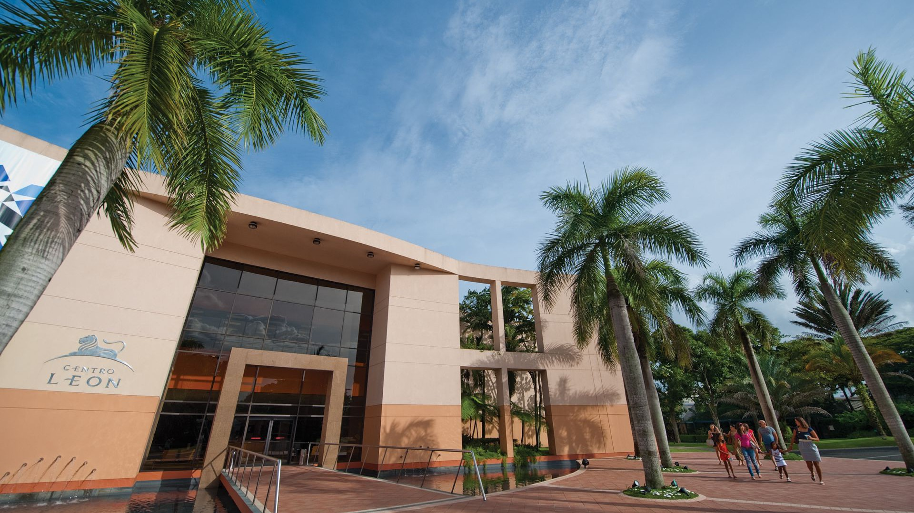

Centro Cultural Leon Jimenez
Informacion de eventos de Diciembre

- BACHATA MÍA | CONCIERTO (Diciembre 10 @ 7:00 PM - 10:00 PM AST)
- Concierto homenaje a Víctor Víctor, artistas invitados y la dirección del Maestro Jochy Sánchez. Auspicio: Banreservas y Centro León. ACTIVIDAD
- BAZAR DE ARTESANÍA | ¡LLEGÓ LA NAVIDAD! (Diciembre 11 @ 10:00 AM - 6:00 PM AST)
- Bazar de artesanía ¡Llegó la navidad! Artesanos y gestores de industrias creativas dominicanas ofertarán sus productos en la institución. Sábado
- PUERTAS ABIERTAS | NAVIDAD CON IDENTIDAD (Diciembre 11 @ 10:00 AM - 7:00 PM AST)
- NAVIDAD CON IDENTIDAD PUERTAS ABIERTAS Entrada gratuita a todas las exposiciones del Centro León. Sábado 11 de diciembre de 2021.
- VISITA TALLER I UN NACIMIENTO MUY DOMINICANO (Diciembre 11 @ 10:30 AM - 12:00 PM AST)
- NAVIDAD CON IDENTIDAD VISITA TALLER | UN NACIMIENTO MUY DOMINICANO Recorrido guiado por la sala Signos de identidad para reconocer
- VISITA TALLER II. MÚSICA Y NAVIDAD (Diciembre 11 @ 3:00 PM - 4:30 PM AST)
- NAVIDAD CON IDENTIDAD VISITA TALLER II - MÚSICA Y NAVIDAD Recorrido guiado por las salas de antropología y artes visuales.
- TARDE DE FOLKLORE | NAVIDAD CON IDENTIDAD (Diciembre 11 @ 5:00 PM - 7:00 PM AST)
- NAVIDAD CON IDENTIDAD TARDE DE FOLKLORE Presentación del Teatro Cocolo Danzante de los Guloyas y La Cofradía del Espíritu Santo.
- CONCIERTO DE NAVIDAD | NAVIDAD CON IDENTIDAD (Diciembre 11 @ 6:30 PM - 8:30 PM AST)
- NAVIDAD CON IDENTIDAD CONCIERTO DE NAVIDAD Presentación de KORIBE, Coro de Cámara del Ministerio de Cultura de la República Dominicana.
- CONFERENCIA | CEMENTERIO MUNICIPAL DE LA CALLE 30 DE MARZO (Diciembre 15 @ 7:00 PM - 9:00 PM AST)
- CONFERENCIA CEMENTERIO MUNICIPAL DE LA CALLE 30 DE MARZO El arquitecto Harold Paz expondrá sobre el valor arquitectónico y patrimonial.
- TERTULIA MUSICAL | LA MÚSICA EN LA NAVIDAD DOMINICANA (Diciembre 16 @ 7:00 PM - 9:00 PM AST)
- TERTULIA MUSICAL | LA MÚSICA EN LA NAVIDAD DOMINICANA El músico Josean Jacobo y el investigador Alexis Méndez dialogarán sobre